How to manage Referrals
The Referrals section of the menu on the left gives your two options:
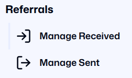
- Manage Received. This menu option will take you to a page where you can view and manage the referrals that you have received from other organisations.
- Manage Sent. This menu option will take you to a page where you can view and manage the referrals that you have sent to other organisations.
How to create a Referral
The “New Case” button is located in the top right corner of the Manage Sent page.
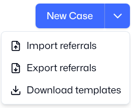
Click the button to open the referral page. From here you can also Import referrals (if you already have them on your device in the agreed format), Export referrals, and Download referral templates.
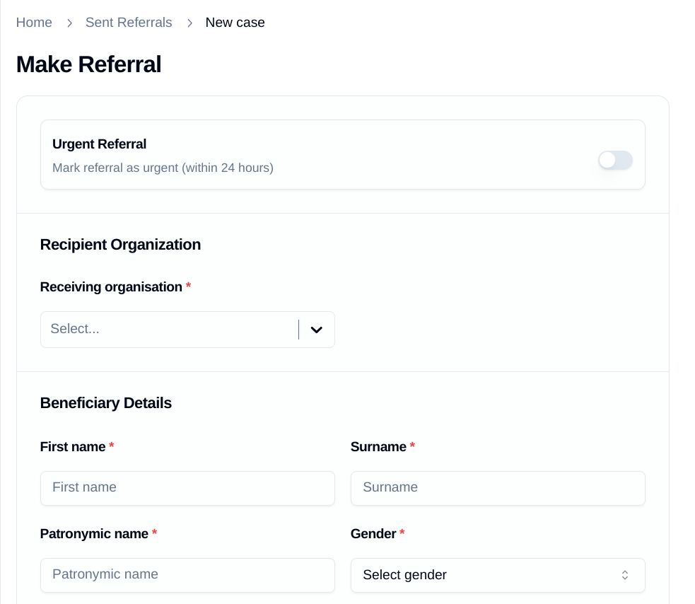
This page is modelled on the existing referral form agreed by the Ukraine Response Consortium. It contains all the fields necessary to make a referral.
- Fill out the mandatory referral fields.
- (Optional) Upload additional information, such as image files.
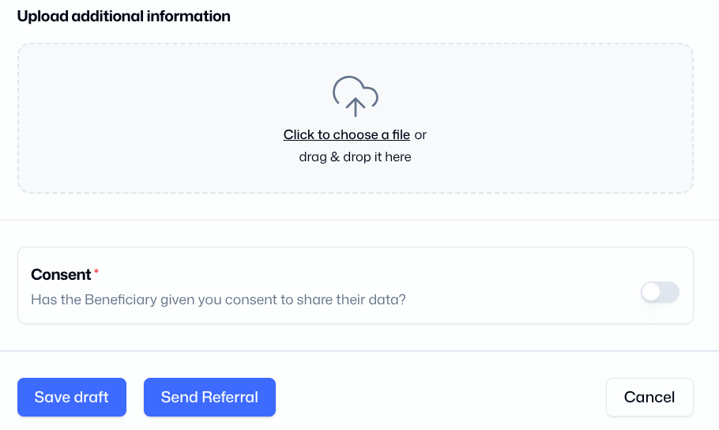
Beneficiary Consent Required
Before you can finalize the referral, you must verify that the beneficiary has given explicit consent to share their data by clicking the consent toggle button.
Once you have completed the form and verified consent, click one of the three options:
- Save Draft: Save the referral to edit later.
- Send Referral: Send the completed form to the receiving organisation.
- Cancel: Discard the referral without saving.
Manage Sent
On this page you can view the referrals that you have sent to other organisations, and you can create a new referral.
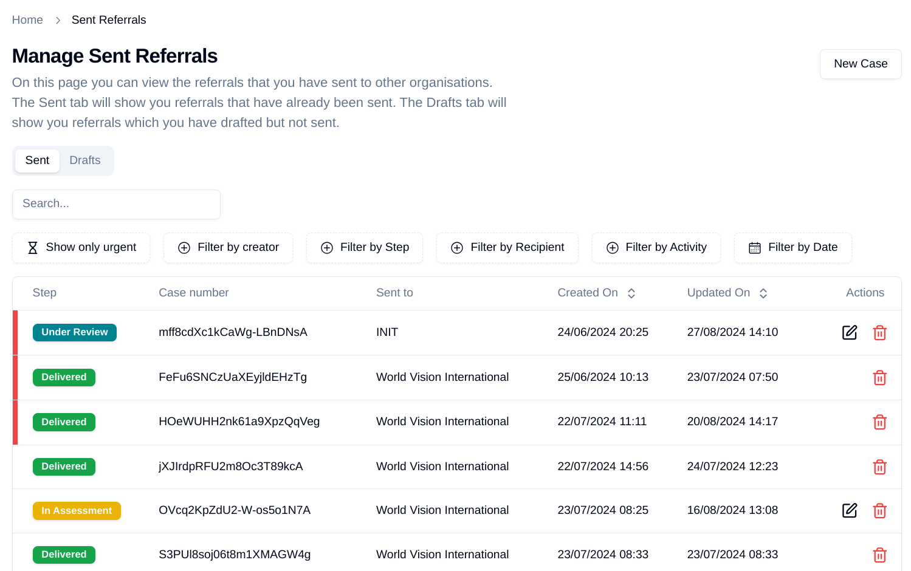
The referrals that you have sent to other organisations are shown in a list. You can Search for a specific referral, or you can filter the referrals by Creator, by Step, by Recipient, by Activity, or by Date. The Actions column in the right show if you have permission to Edit or Delete the Referral.
Above the list of referrals are two Tabs: Sent, and Drafts.
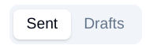
Sent Tab
The Sent tab will show you referrals that have already been sent. It shows the Case number, the organisation which the referral was Sent to, the Status of the referral, and the dates the referral was Created on and Updated on. You can also edit or delete referrals using the pen and paper icon or the trash icon on the right.
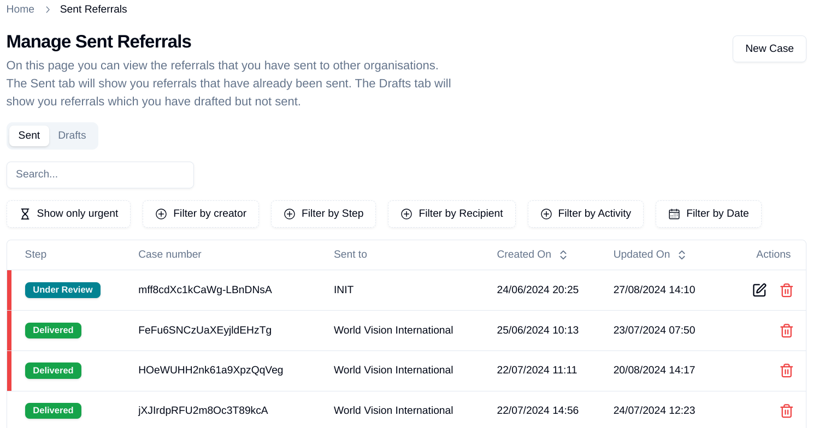
Drafts Tab
The Drafts tab will show you referrals which you have drafted but not sent. You can edit these drafts by clicking on the Pen and Paper icon on the right.
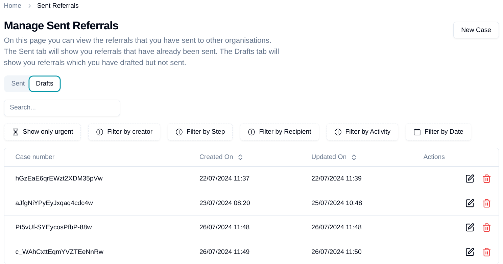
How to Withdraw a Referral
While the SO has responsibility for a Case, it can edit or withdraw any referral that it has sent. The RO will be able to see that the referral has been edited or withdrawn. The SO can then delete the Referral completely, or send it to a new SO.
Manage Received
On this page you can view the referrals that you have received from other organisations. The referrals that you have received from other organisations are shown in a Referral List.
The List shows the Case number, the organisation which is the Sender of the referral, the Status of the referral, and the dates the referral was Created on and Updated on.
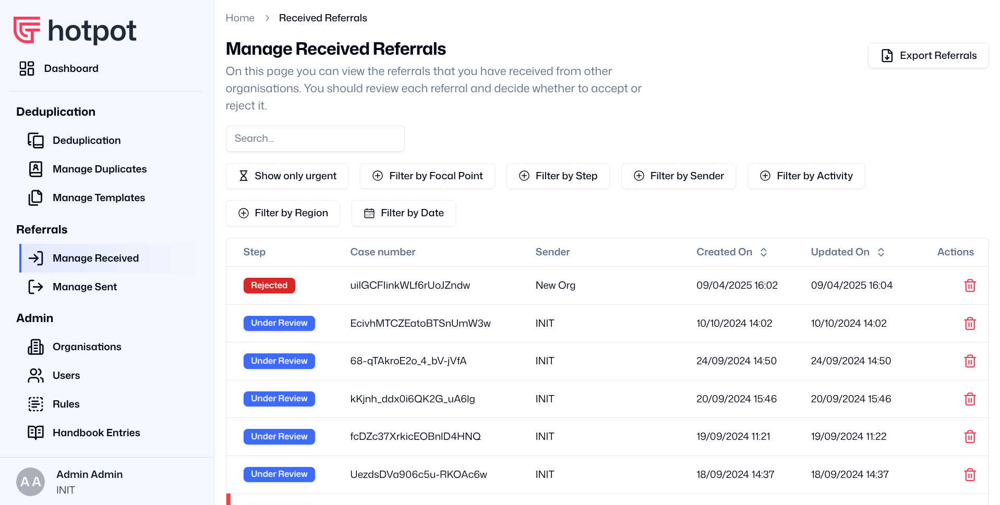
Viewing Referrals
The functions available to you on this page are:
Search for a specific Referral
You can search for a specific referral by typing any search term into the Search Box.
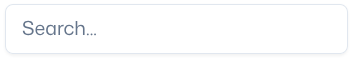
Filter the Referral List
Below the Search Box are options for filtering the referrals by different variables:
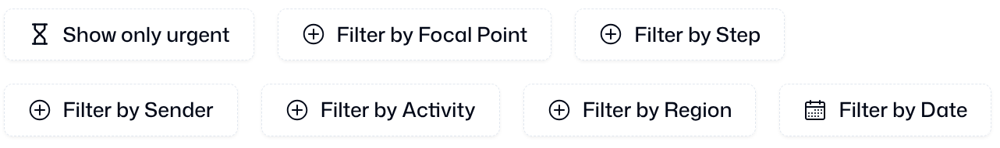
Most of these variables are easy to understand. Filter by Step is more complicated, and it is important that you understand what each Step means. You can learn more in the section below titled “Understanding the Steps in a Referral”.
View the details of a specific Referral
If you click on any part of a line which shows a Case in the List, it will take you to a new page containing the Individual Case Details.
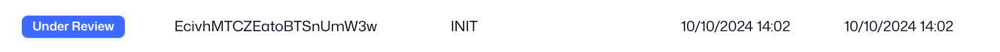
Delete a specific Case
- Click the Trashcan icon at the end of the case line.
- A pop-up box will appear asking you to confirm.
Cannot be retrieved
You should not click "Confirm" unless you are absolutely certain. Once you delete the Case, it cannot be retrieved!
Export a list of Referrals
Click the Export Referrals button in the top right corner to download the list as an Excel file containing details for each Case.
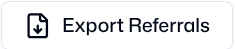
Individual Case Details
The platform assigns each case a unique Case Number, which displays at the top of the specific referral case page.
To the right of the Case Number are a drop-down list and buttons used to manage the referral. Each button is explained later in this section.
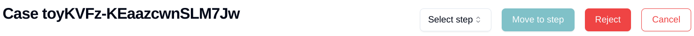
Below the Case Number are two Tabs: Referral, and Discussion.
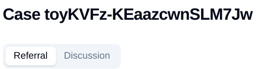
Referral tab
The Referral Tab is the default view on this page. In the Referral Tab, you can view all the details of the Referral.
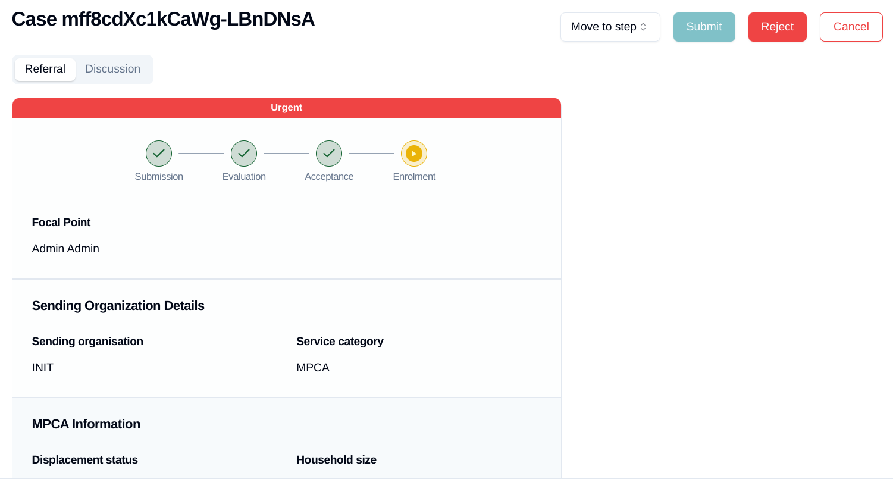
The top of the tab displays a visual representation of the case status and its progress through the Steps. To learn more about the Steps, refer to the section below titled “Understanding the Steps in a Referral”.
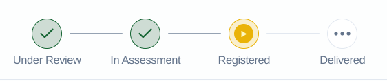
Discussion Tab
The Discussion tab displays the referral's progress through the different steps, including dates and times. From here you can also send messages, updates, and requests for information to the Sending or Receiving Organisation, ensuring a record is kept for future reference.
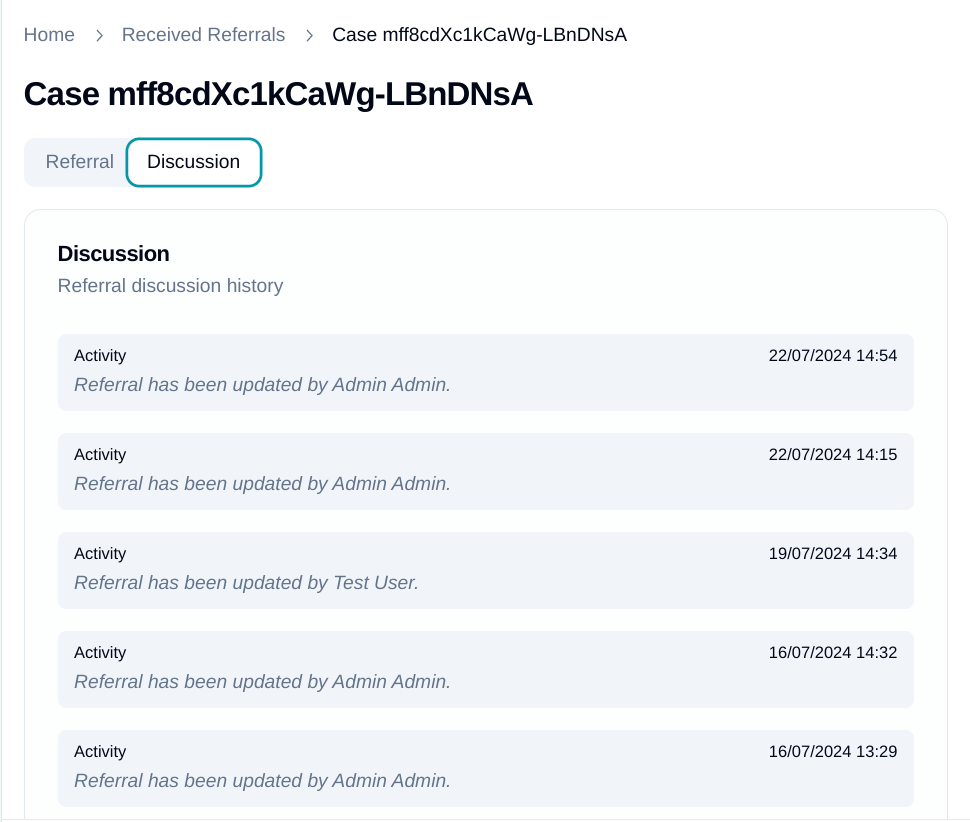
Understanding the Steps in a Referral
A Referral Case goes through several Steps. These Steps are shown at the top of a page when you view an Individual Case Detail, and they will help you to understand whether the referral is making progress or has been completed.
To change the Step of a Case:
- Select a new step from the drop-down list in the top right of the screen.
- Click Move to Step to update the Case.
Explanations of each step are given below.
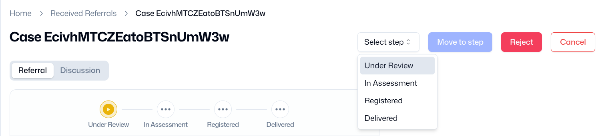
Under Review
The Sending Organisation (SO) sends the Referral Form to another organisation on the platform (the Receiving Organisation, or RO) because they believe that the RO can provide the support needed by the beneficiary. Once the RO receives the referral, it is labelled on the platform as Under Review.
In assessment
The RO reviews the case based on the information in the Referral Form. They will then decide whether this case is suitable for their organisation - based on whether they have the capacity, for example, or whether they still work in that location or sector. The RO will then decide whether
- To accept the referral, in which case it will be labelled as In Assessment.
- To reject the referral, in which case it will be returned to the SO for follow-up.
Registered
The RO assesses the case, perhaps sending their staff to visit the individual’s location. This assessment will check if the referral service is really needed, and if they are able to provide that service. The RO will then decide whether
- To register the individual, in which case it will be labelled as Registered.
- To reject the referral, in which case it will be returned to the SO for follow-up.
Transfer of Responsibility
The Sending Organisation (SO) has responsibility for a Case until the Receiving Organisation (RO) registers the beneficiary. Once the RO registers the beneficiary, it takes formal responsibility for that case, and the SO cannot make any further changes to the referral form.
Delivered
The RO will then provide the service that was requested in the referral. If the service which has been delivered is time-limited, they can mark the referral as Delivered. If the service is not time-limited, the RO can retain the Registered status indefinitely.
What happens if a Referral is rejected?
If the RO decides to reject a Referral, it is returned to the SO. The RO should send a message in the Discussion tab, to explain why it has been rejected. The SO can then withdraw the Referral, and potentially send it to a new RO. The Individual Case remains on the platform unless the SO deletes it.